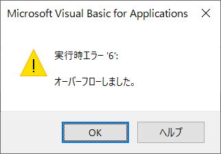

VBAのString型の最大文字数について
ツイッターで出したVBAのお題です。
String型はVBAリファレンスでは、「可変長文字列は、最大で約 20 億 (2^31) 文字を格納できます。」と書かれています。
これについて、本当は何文字まではいるのかについての問題です。
お題のツイート
String型はVBAリファレンスでは、
「可変長文字列は、最大で約 20 億 (2^31) 文字を格納できます。」
と書かれています。
「約」ってなんだ、この際はっきりさせようじゃないか。
むしろこれは実際に確かめて回答してもらって良い問題です。
そもそもどうやって確認するか、、、
・
ここには二つの教訓がある。
・書かれていることを妄信してはいけない。
・「約」と書く場合はそれなりの事情がある。
エクセルやVBAに限ったことではないですね。
ツイッターで頂いたリプライから
解説のツイート
しかし、32bitの場合は数億台でエラーになります。（数値ははっきりせず）
「とことんいける」が次いで多いのが頼もしい。
とことん行きたいですよね。
明日時間があれば可能な範囲で説明します。
「最大で約20億(2^31)文字」これを読んでピンきた方は相当にお詳しいひとですね。
この20億(2^31)という数値は、Long型の数値の最大数になります。
ではなぜ、String型の最大文字数がLong型の最大数と関係があるのでしょうか。
文字列を大量に作成する関数には、String関数とSpace関数があります。
関数名の後ろに$をつけると戻り値の型がString型になります。
簡単なところで、Space$関数で検証してみましょう。
以下の検証は64BitのExcelになります。
32bitについては最後に説明します。
?Space(2 ^ 31)
※^は64bitのVBAではLongLongの型文字になるので^の前に空白が必要です。
「オーバーフローしました。」
プロシージャーを書いて1から順に確認してみましょう。
Dim str As String
Dim i As Long
For i = 1 To 31
str = Space$(2 ^ i)
Next

2 ^ 30
これは1073741824
20億の半分でもエラーになってしまいました。
これはSpace関数の制限です。
2 ^ 30 -1
ここまでがSpace関数の限界になっています。
これはString関数も同じです。
そこで、Space$(2 ^ 30 -1)を&でつなげてみましょう。
str = Space$(2 ^ 30 -1) & Space$(2 ^ 30 -1)
これはエラーになります。
確認には処理時間がかかるので目星をつけて、
2 ^ 31
この少し下の数値から確認してみましょう。
Dim str As String
Dim i As Long
For i = 20 To 1 Step -1
str = Space(2 ^ 30 - 1) & Space(2 ^ 30 - i)
Debug.Print Len(str)
Next
2147483635
ここが限界です。
「最大で約20億(2^31)文字」でしたが、
2^31=2147483648
Longの最大数は、
2^31-1=2147483647
これよりも、もう少しだけ小さい数値になっています。
確認するにはVarPtr関数とStrPtr関数を使います。
実際の文字列があるアドレスの直前には4バイトの文字列長部分があり、文字列の直後には2バイトの終端があります。
https://excel-ubara.com/excelvba4/EXCEL_VBA_422.html
つまりString型の最大文字数は、
Long型の最大数、
2^31-1=2147483647
ここから終端の2バイトを引いた、
2147483645
これがString型の最大文字数になります。
以上が64bitの場合のString型の最大文字数です。
32bitの制限でメモリは4GB（アプリは2GB）が限界となります。
Excelの他にもChromeやらその他のソフトでメモリが使われています。
メモリを超えるサイズの文字列は作れません。
つまり残っているメモリ次第という事になります。
Excel以外に色々なアプリが沢山動いていればもっと少なく、3億文字くらいでもエラーになります。
PC環境、実行のたびにも違った限界値になります。
32bitの場合は、2億文字くらいが限界と考えておいた方が良いでしょう。
Excelを64bitにするならメモリはちゃんと積みましょうね。
解説は以上です。
正解としては、
「まだまだ、とことんいける」
これ以外はある意味どれも正解で良いでしょう。
気分としては、とことん行きたかったですけどね(笑)
同じテーマ「エクセル雑感」の記事
日付の謎：IsDateとCDate
ツイッター投稿用に文字数と特定文字で区切る
マクロ記録での色のマイナス数値について
VBAのString型の最大文字数について
Variantの数値型と文字列型の比較
Variant仮引数にRange.Valueを配列で渡す方法
Variant仮引数のByRefとByValの挙動違い
100桁の正の整数値の足し算
「VBA Match関数の限界」についての誤解
VBAで数値を漢数字に変換する方法
囲碁で相手の石を囲んで取るアルゴリズム
新着記事NEW ・・・新着記事一覧を見る
VBA100本ノック 100本目：WEBから100本ノックのリストを取得｜VBA練習問題（3月3日）
VBA100本ノック 99本目：自動席替え（行列と前後左右が全て違うように）｜VBA練習問題（3月2日）
VBA100本ノック 98本目：席替えルールが守られているか確認｜VBA練習問題（3月1日）
VBA100本ノック 97本目：Accessデータを取得（グループ集計）｜VBA練習問題（2月27日）
VBA100本ノック 96本目：Accessデータを取得（マスタ結合&抽出）｜VBA練習問題（2月26日）
VBA100本ノック 95本目：図形のテキストを検索するフォーム作成｜VBA練習問題（2月24日）
VBA100本ノック 94本目：表範囲からHTMLのtableタグを作成｜VBA練習問題（2月23日）
VBA100本ノック 93本目：複数ブックを連結して再分割｜VBA練習問題（2月22日）
VBA100本ノック 92本目：セルの色を16進で返す関数｜VBA練習問題（2月20日）
VBA100本ノック 91本目：時間計算（残業時間の月間合計）｜VBA練習問題（2月19日）
アクセスランキング ・・・ ランキング一覧を見る
1.最終行の取得（End,Rows.Count）｜VBA入門
2.RangeとCellsの使い方｜VBA入門
3.変数宣言のDimとデータ型｜VBA入門
4.マクロって何？VBAって何？｜VBA入門
5.Range以外の指定方法（Cells,Rows,Columns）｜VBA入門
6.セルのコピー&値の貼り付け（PasteSpecial）｜VBA入門
7.繰り返し処理（For Next)｜VBA入門
8.セルに文字を入れるとは（Range,Value）｜VBA入門
9.マクロはどこに書くの（VBEの起動）｜VBA入門
10.とにかく書いてみよう（Sub,End Sub）｜VBA入門
このサイトがお役に立ちましたら「シェア」「Bookmark」をお願いいたします。
記述には細心の注意をしたつもりですが、
間違いやご指摘がありましたら、「お問い合わせ」からお知らせいただけると幸いです。
掲載のVBAコードは動作を保証するものではなく、あくまでVBA学習のサンプルとして掲載しています。
掲載のVBAコードは自己責任でご使用ください。万一データ破損等の損害が発生しても責任は負いません。